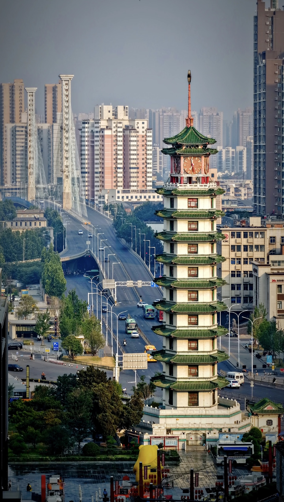
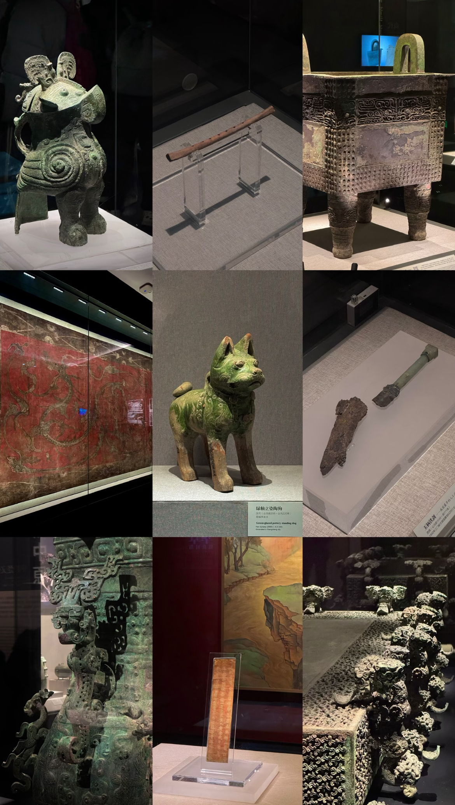
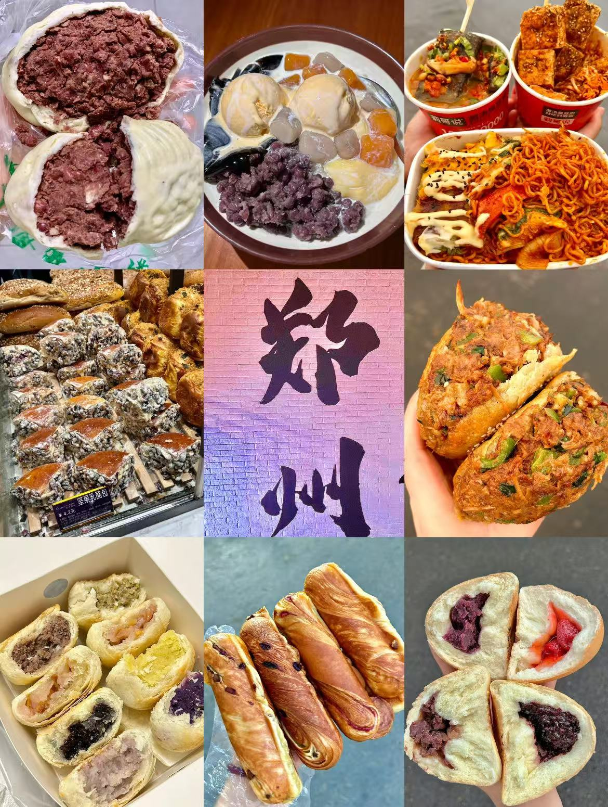

A Monument to History: Erqi Tower

Standing proudly in the heart of Zhengzhou's bustling commercial district, the Erqi Memorial Tower is the true symbol of the city. Built to commemorate the monumental Erqi Strike of 1923, this striking twin-tower structure echoes the resilience and spirit of the local working class.
Today, the tower is surrounded by vibrant shopping malls and historic streets. When night falls, the area transforms into a lively hub of energy. The glowing clock tower watches over locals and travelers alike, making it the perfect starting point to understand the city's modern pulse.
The Keeper of Time: Henan Museum

Located in the Jinshui District, the Henan Museum is a breathtaking treasure trove. Recognized instantly by its unique pyramid-inspired architecture, the building itself is a modern tribute to ancient astronomical observatories.
Inside, it houses over 170,000 artifacts, including exquisite bronze vessels, jade carvings, and ancient musical instruments. It offers visitors a fascinating journey through the very origins of Chinese history, proving that Zhengzhou is a city built upon layers of civilization.
The Soul in a Bowl: Zhengzhou Cuisine

You haven't truly experienced Zhengzhou until you've tasted its signature dish: Hui Mian (Braised Noodles). Hand-pulled flat noodles are bathed in a rich, slow-simmered lamb bone broth, topped with tender meat, quail eggs, and fresh herbs. It is the ultimate comfort food that warms the soul of every local.
Beyond the noodles, Zhengzhou's night markets offer a vibrant culinary adventure. Dive into the bustling streets where the aroma of grilled skewers and local delicacies fills the air. Here, tradition meets modern street food culture in the most delicious way possible.